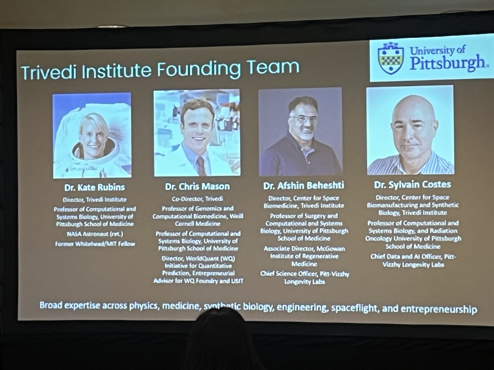
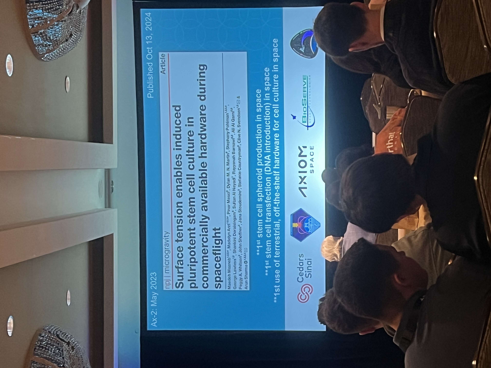
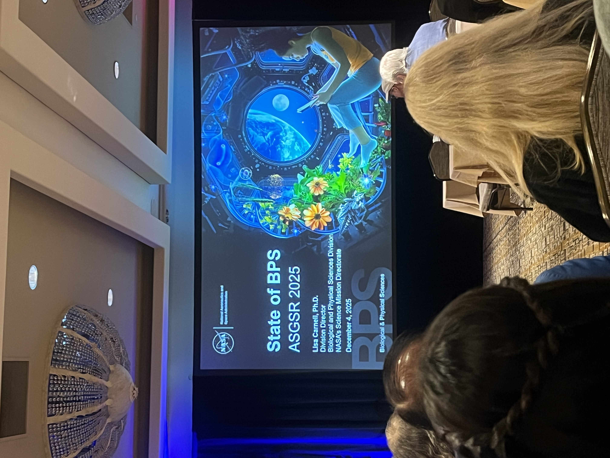
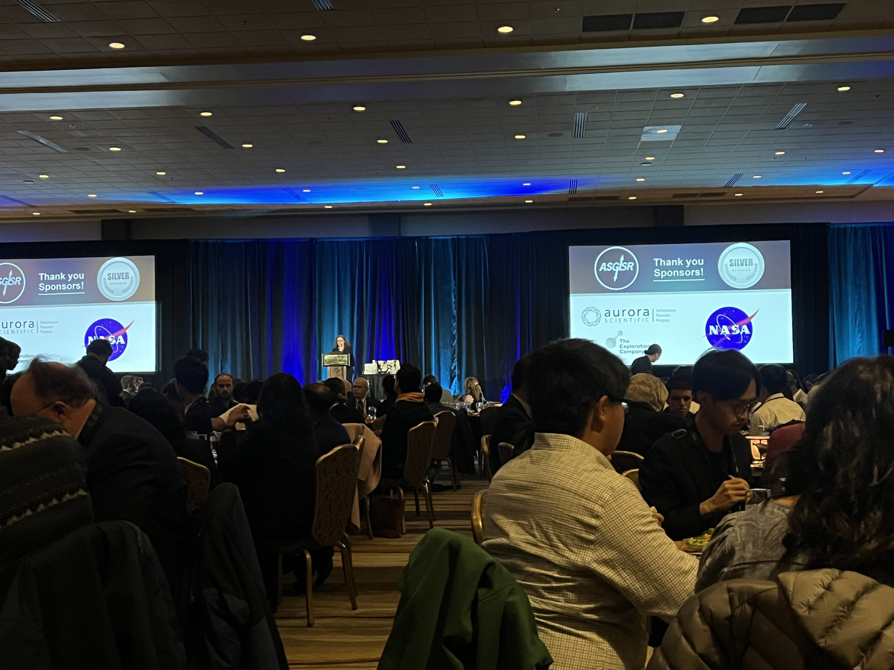
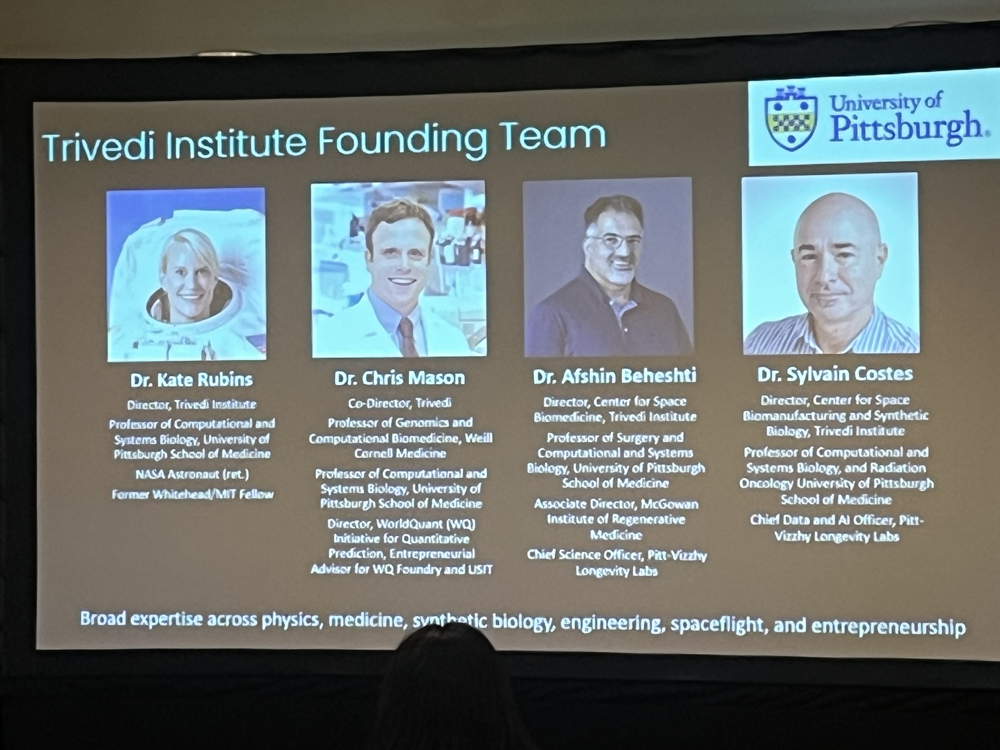
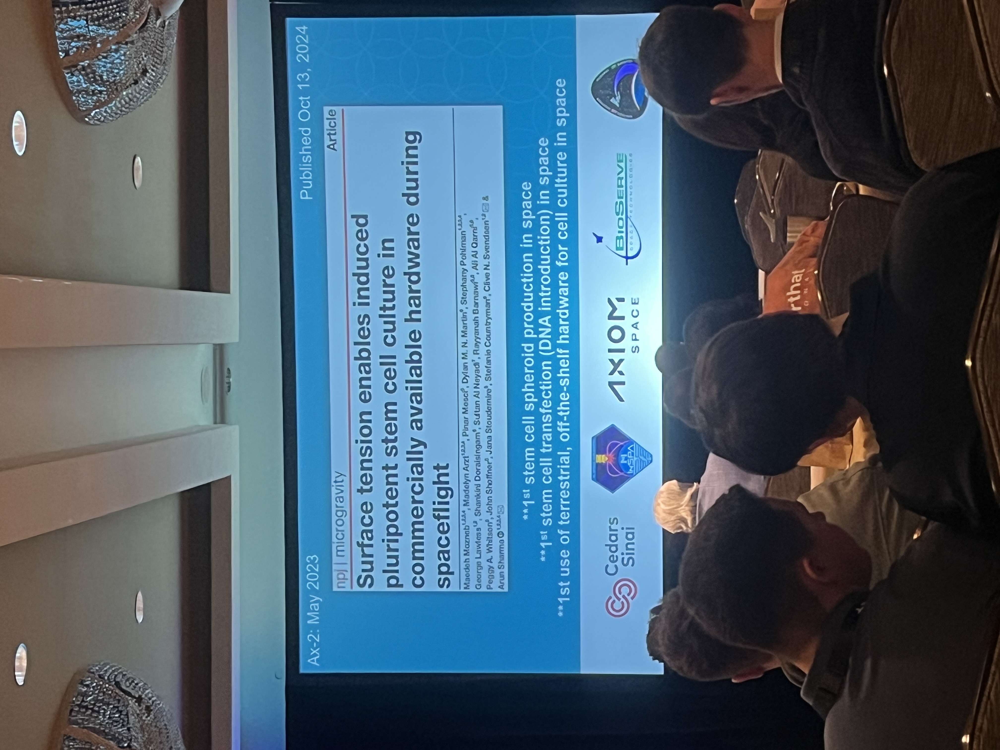
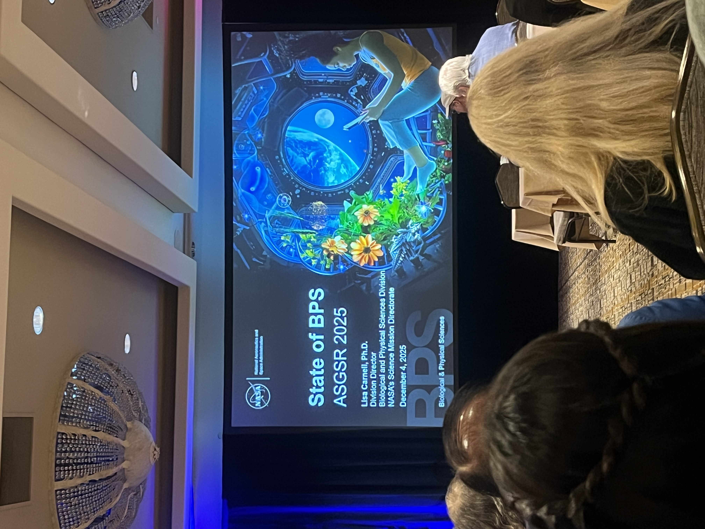
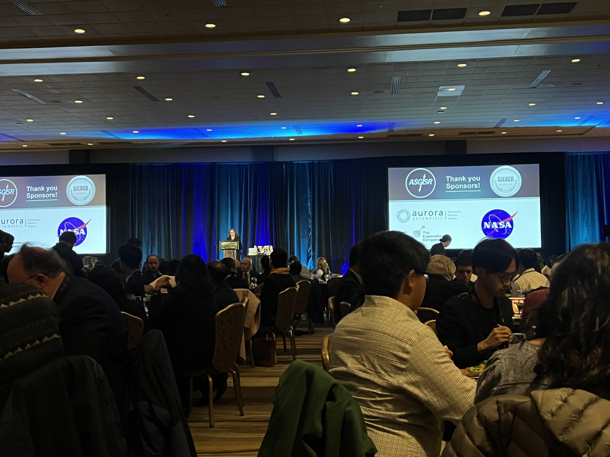
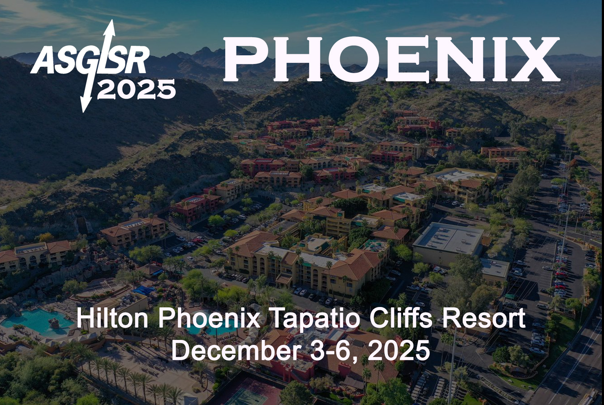

Updates
• ASGSR 2025 — Post-Conference Update
 







I recently presented my work at the American Society for Gravitational and Space Research (ASGSR) 2025, where I shared transcriptomic evidence suggesting that the brain may become more vulnerable following long-duration spaceflight.
Presenting in the “Neuro–Immune Crosstalk & Omics” session also enabled in-depth discussions on how spaceflight-induced molecular stress may intersect with mitochondrial dysfunction, disrupted iron homeostasis, and long-term neurodegenerative risk.
This was my first international conference presentation, and it was a meaningful milestone that helped me clarify my direction as a researcher. I was inspired by the passion and depth of many presentations, and I was especially grateful for the opportunity to connect with outstanding scientists I had long hoped to meet. Hearing about newly launched institutes and well-structured, multi-year research roadmaps further strengthened my motivation to contribute to this field. Moving forward, I will focus even more on preparing for the next steps of my research journey.
Presenting in the “Neuro–Immune Crosstalk & Omics” session also enabled in-depth discussions on how spaceflight-induced molecular stress may intersect with mitochondrial dysfunction, disrupted iron homeostasis, and long-term neurodegenerative risk.
This was my first international conference presentation, and it was a meaningful milestone that helped me clarify my direction as a researcher. I was inspired by the passion and depth of many presentations, and I was especially grateful for the opportunity to connect with outstanding scientists I had long hoped to meet. Hearing about newly launched institutes and well-structured, multi-year research roadmaps further strengthened my motivation to contribute to this field. Moving forward, I will focus even more on preparing for the next steps of my research journey.
• ASGSR 2025

I will be giving an oral presentation at the
American Society for Gravitational and Space Research (ASGSR) 2025
conference.
My talk is titled:
“Astrocyte Ferroptosis in the Brain After Long-Term Spaceflight: Insights from NASA GeneLab RNA-seq Data.”
It will take place during the “Neuro–Immune Crosstalk & Omics” session on Friday, December 5, 2025, 2:00 PM – 3:30 PM, at the Hilton Phoenix Tapatio Cliffs Resort, Courtroom MN.
It is both exciting and humbling to share my work among such remarkable presenters, and I sincerely appreciate your interest and support.
My talk is titled:
“Astrocyte Ferroptosis in the Brain After Long-Term Spaceflight: Insights from NASA GeneLab RNA-seq Data.”
It will take place during the “Neuro–Immune Crosstalk & Omics” session on Friday, December 5, 2025, 2:00 PM – 3:30 PM, at the Hilton Phoenix Tapatio Cliffs Resort, Courtroom MN.
It is both exciting and humbling to share my work among such remarkable presenters, and I sincerely appreciate your interest and support.
• Book Recommendation – Project Hail Mary

This is one of the most impactful books I have read recently.
As a space-themed science-fiction novel centered on a biologist, it resonated deeply with me and offered significant inspiration as someone who dreams of studying the biology of spaceflight.
While independently navigating the challenges of my first omics analyses, I often found strength by recalling Grace—conducting Astrophagy research alone in space while bearing the responsibility of humanity’s future.
The story has been adapted into a film set to release on March 20, 2026, and I highly recommend reading it before then.
I hope that one day, scientists like myself who look toward space will also encounter a true partner like Rocky.
As a space-themed science-fiction novel centered on a biologist, it resonated deeply with me and offered significant inspiration as someone who dreams of studying the biology of spaceflight.
While independently navigating the challenges of my first omics analyses, I often found strength by recalling Grace—conducting Astrophagy research alone in space while bearing the responsibility of humanity’s future.
The story has been adapted into a film set to release on March 20, 2026, and I highly recommend reading it before then.
I hope that one day, scientists like myself who look toward space will also encounter a true partner like Rocky.